1 / 3

DESCRIPTION
Jabalpur is the administrative headquarters of Jabalpur district (the second-most-populous district in Madhya Pradesh) and the Jabalpur division. Historically, a center of the Kalachuri
and Gond dynasties, the city developed a syncretic culture influenced by intermittent Mughal and Maratha rule. During the early nineteenth century, it was annexed by British India as Jubbulpore and incorporated as a cantonment town. Since Indian independence there have been demands for a separate state of Mahakoshal, with Jabalpur its capital. The High Court of Madhya Pradesh, headquarters of the West Central Railway and Army headquarters of five states (Madhya Pradesh, Chhattisgarh, Orissa, Bihar and Jharkhand) are located in Jabalpur. The city is also home to the Gun Carriage Factory. Jabalpur has been selected as one of the hundred Indian cities to be developed as a smart city under Smart Cities Mission.
Bheraghat is a unique experience where one can see a huge mountains of marble and a beautiful waterfall.

Bhedaghat
Bhedaghat is famous for the high marble rocks making a valley through which river Narmada flows. The place also has a beautiful waterfall, known as Dhuandhar Falls (literally meaning a stream of smoke, because of its appearance).

Khandari Lake
Khandari WaterFall Jabalpur is a very beautiful waterfall located in the Jabalpur district. But it is a small Waterfall in Jabalpur. Khandari waterFall is formed due to the overflow of water in Khandari Lake located in Dumna Nature Reserve (Dumna Nature Park).
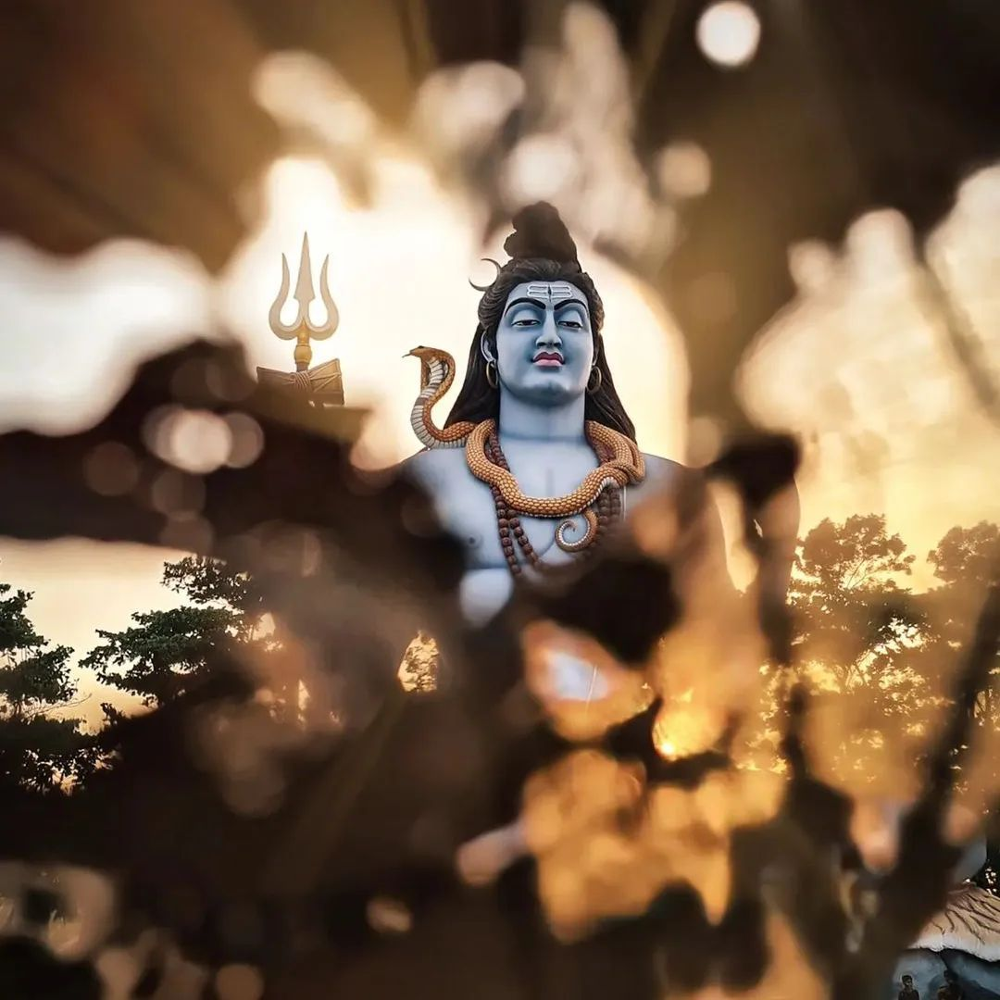
Kachnar city
The Kachnar City is well known for the tourist attraction and religious destination for the locals and the people from abroad because of the tallest statue of Lord Shiva which was build in the year 2004 and was made available for the public, tourists and the devotees from 15 February 2006.

Madan Mahal Fort
The fort is also associated with the king's mother, Rani Durgavati, who happened to be a valiant Gond ruler of the place. This fort, which is at ruins at present, does speak about the aura of Rani Durgavati and her fully equipped administration and military.
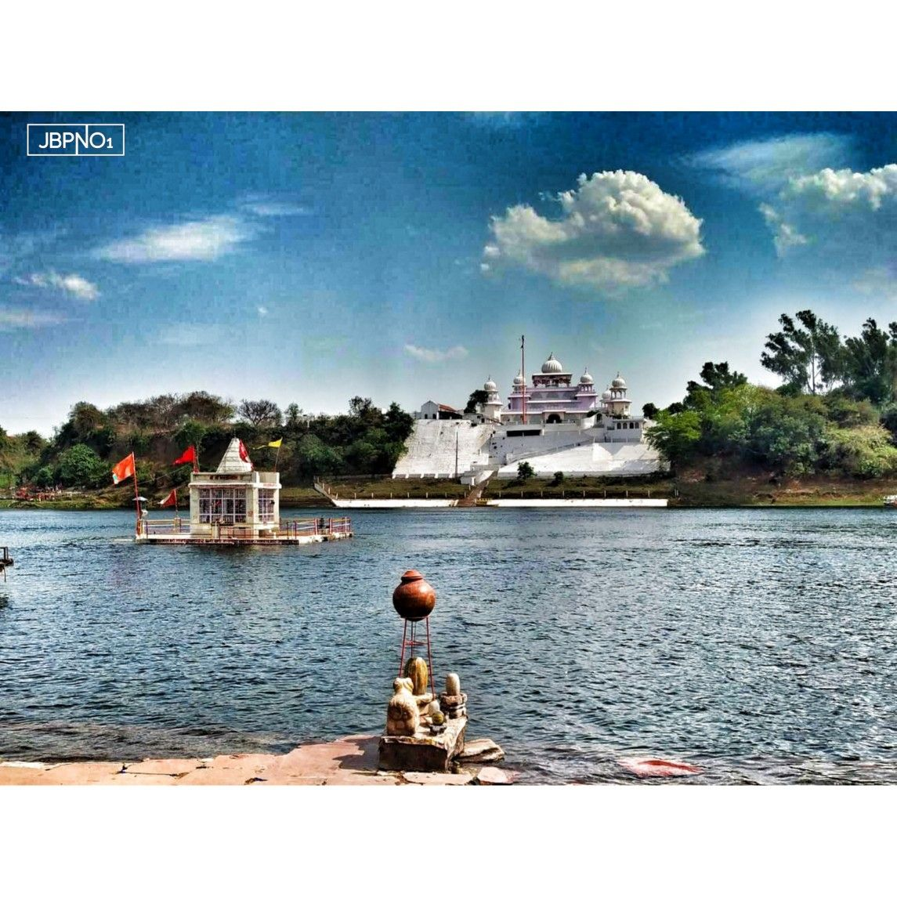
Gwarighat
Gwarighat serves as a famous ghat of Narmada River. The presence half-submerged temple dedicated to Maa Narmada made this place even more special. Although half of the temple always drowns in water, it does not stop the temple's devotees from offering daily prayers and holding beautiful aarti in the evening which is attended by a huge number of people.
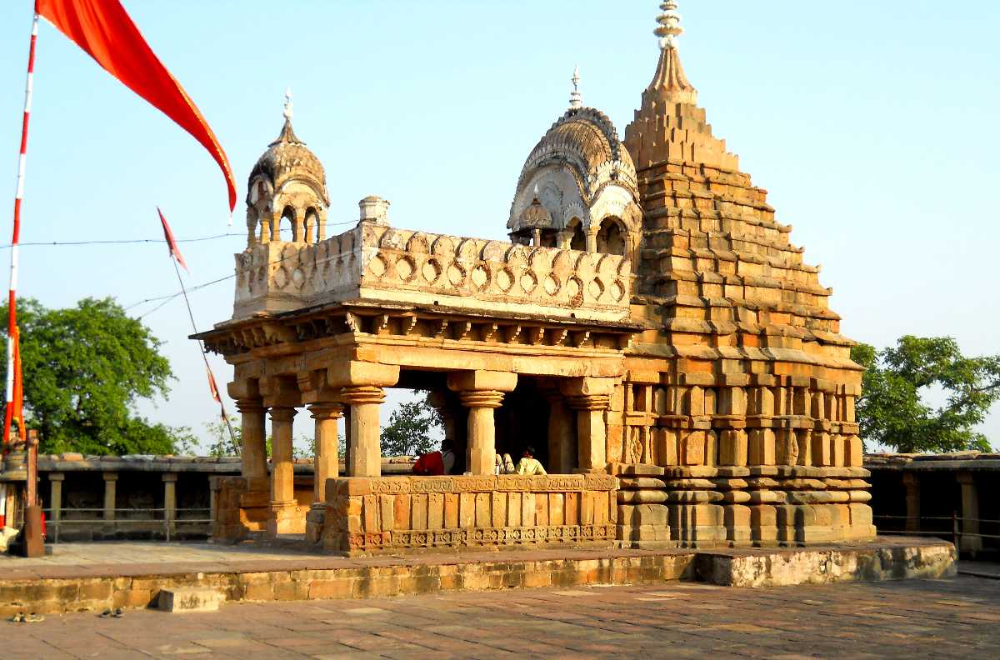
Chausath Yogini Temple
Chausath Yogini Temple is one of the oldest heritage sites in India. It was built in the 10th Century AD by the Kalachuri kingdom and has a distinct resemblance to the temples of Khajuraho in structure. The temple is the abode of Goddess Durga along with 64 yoginis. A Yogini is a female attendant of the mother goddess.
Food you must try
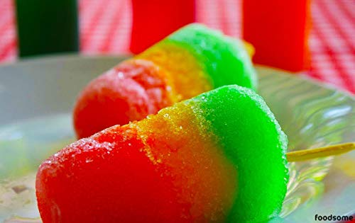
Barf Ka Gola
Sold on cart at busy places in old market area “Lord Ganj” as well as other too for Rs10; Ice block crushed using hand operated machine and filled in to a glass. Topped up with dry coconut powder and further with flavour of your choice like orange, cola, rose, pineapple, kala khatta, lemon etc.
If you want to go one step further; a bread slice will also be crushed in to ice. Regarding taste; only a kid or a person with heart of a kid can. Hygiene; only parents can.
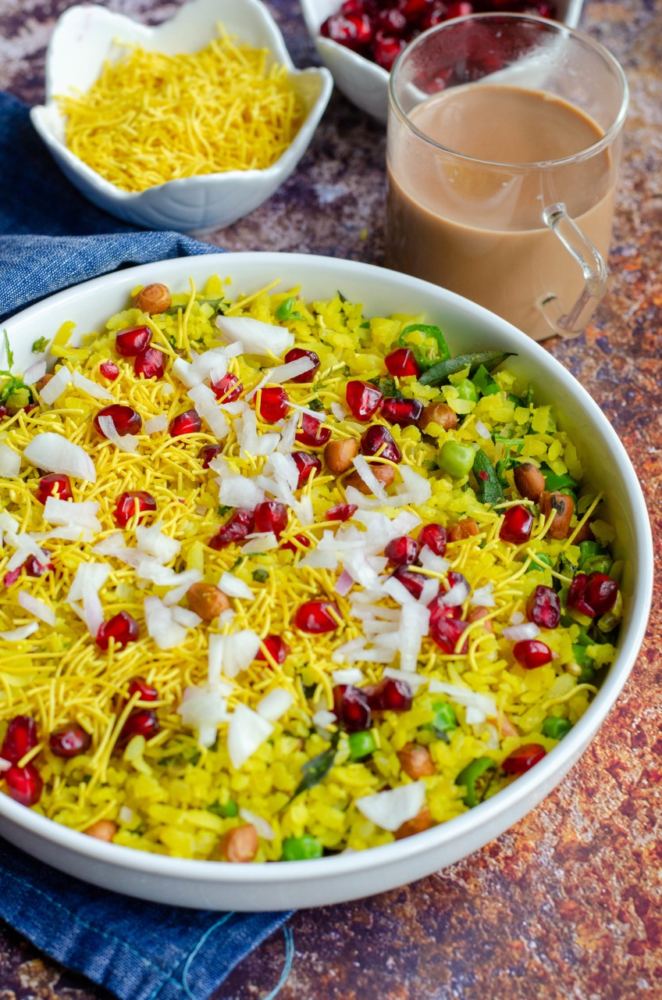
Poha
Annapurna Snacks (opp Khandelwal Furnitures, near Maharashtra School)
This place starts early in the morning and serves Poha, Jalebi, Samosa and Alubanda.
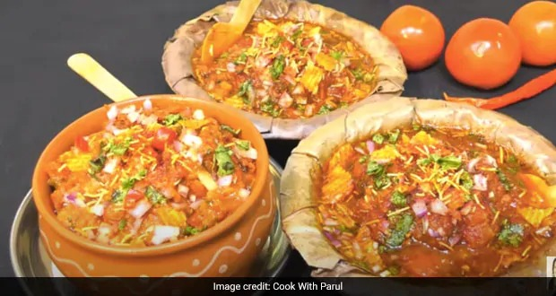
Falahari Chat
Snacks made out of stuff from fruits and vegetables in milk fat. Most famous cart is “Baba ki Chat”. Heavy cast iron griddle kept over a wood fired furnace on a cart. Everything is cooked using pure ghee. Serving only 3 items.
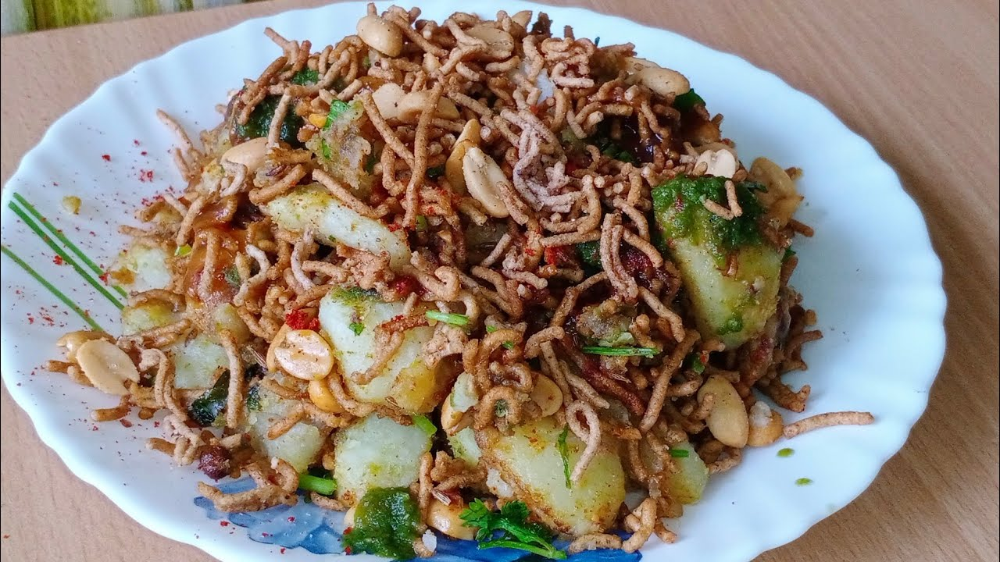
Gatpat Chat
Snacks made out of stuff from fruits and vegetables in milk fat. Most famous cart is “Baba ki Chat”. Heavy cast iron griddle kept over a wood fired furnace on a cart. Everything is cooked using pure ghee. Serving only 3 items
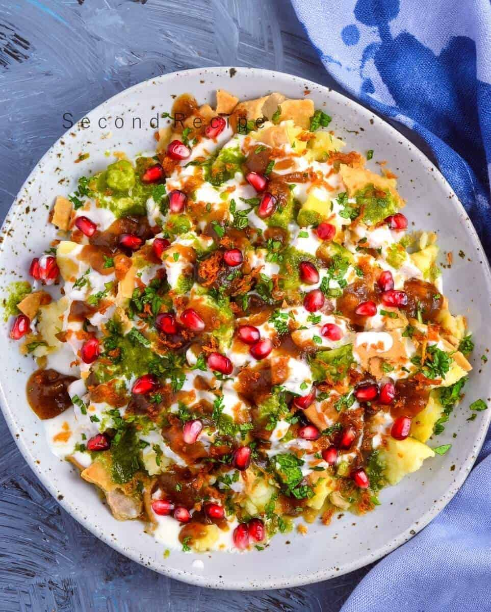
Tamatar Chat
Mashed boiled potato flat patty filled with ginger and green chili paste, slow roasted on the griddle will crisp dark brown. Split in two, topped up with water chestnut sev (fried noodles), fried peanuts, crushed wafers, tamarind chutney, roasted cumin seed powered, rock salt, red chili powder and coriander.
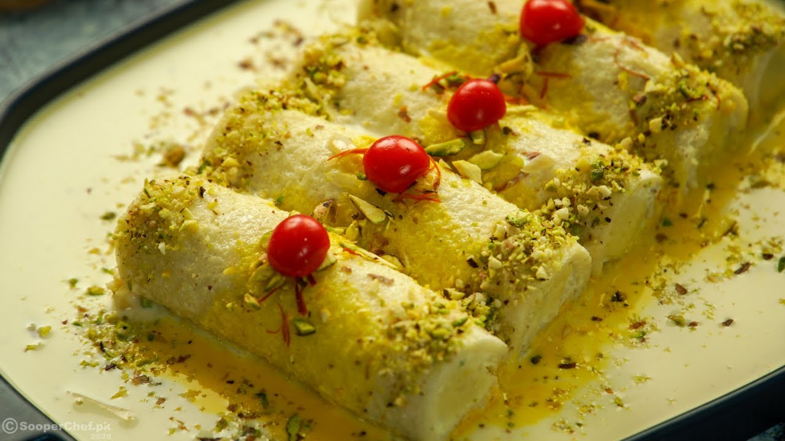
Malai Roll and Rabdi
Popular among business community Rabdi is made by lengthy process of slow cooking of milk and sugar for hours together. The resultant is thick condensed milk which develops a bit granular structure yet having some viscosity to crawl. Very delicious!
Malai roll is made from the cream which floats naturally over the surface of milk once it is boiled and allowed to cooled down. Multiple layers of above mixed with sugar and allowed to set. Delicious.
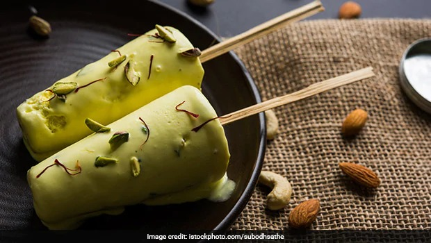
Kulfi
Ingredients used are reduced milk (over prolonged slow heating), adding sugar, fry fruits. Concoction filled in to small sealed containers and dropped in to earthen pot which is already filled with ice and salt mixture. The pot is shaken continuously till the ice-cream sets. The result is soft, creamy ice cream which is hard enough to hold on stick but soft enough to bite. Rs 10 for a stick. Great stuff.
There are many others as well and it is easy to find one near you (wherever you are).
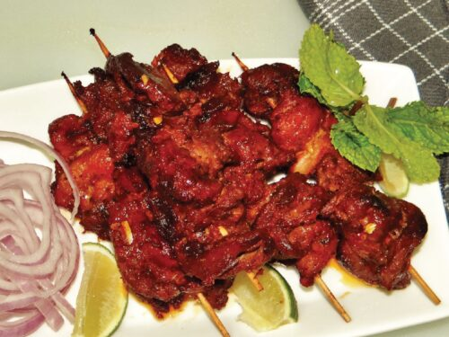
Kebabs
Choti Omti area (Gully that goes in opp Riyaz Hotel), this small shop uses coal fired flat pit and skewers for slow cooking overnight marinated beef (buffalo meat) chunks in tomato and secret spice base. Tender, spicy, cooked to perfection served with thin slices of onions and a lemon slice.
There are a few shops over there in the locality.